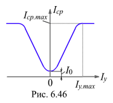

6.5.2.4. Характеристика управления МУ
Расчёт МУ и выбор напряжения U источника синусоидального тока производят обычно таким образом, чтобы при отсутствии подмагничивания амплитуда магнитных потоков была наибольшей, но чтобы магнитопроводы не были насыщены в течение всего периода изменения магнитных потоков. В предположении идеальной прямоугольной петли гистерезиса материала магнитопроводов получают следующее соотношение между средним значением Iср тока нагрузки и током управления Iу:
Iср = 2Iywy/wp,
т. е. среднее значение тока нагрузки прямо пропорционально току управления и удвоенному отношению витков управляющей и рабочей обмоток ki = 2wy / wp, называемому коэффициентом усиления МУ по току.
Характеристика управления Iср(Iy) идеализированного МУ представлена на рис. 6.46. Изменение направления тока Iу не оказывает влияния на величину тока Iср нагрузки, поэтому характеристика Iср(Iy) симметрична относительно оси абсцисс. Вследствие того, что кривая намагничивания ферромагнитных материалов отличается от идеализированной, а также из-за потоков рассеяния у реальных МУ при Iу = 0 в нагрузке протекает небольшой ток холостого хода I0. Ток Iср достигает значения Iср.max при токе управления Iу.max, при котором магнитопроводы полностью насыщены и дальнейшего усиления тока в цепи нагрузки не происходит. Следует отметить, что при 0 < Iу < Iу.max форма кривой тока i(t) существенно несинусоидальна и зависит от способа соединения рабочих обмоток, а также от величины сопротивления цепи обмоток управления.